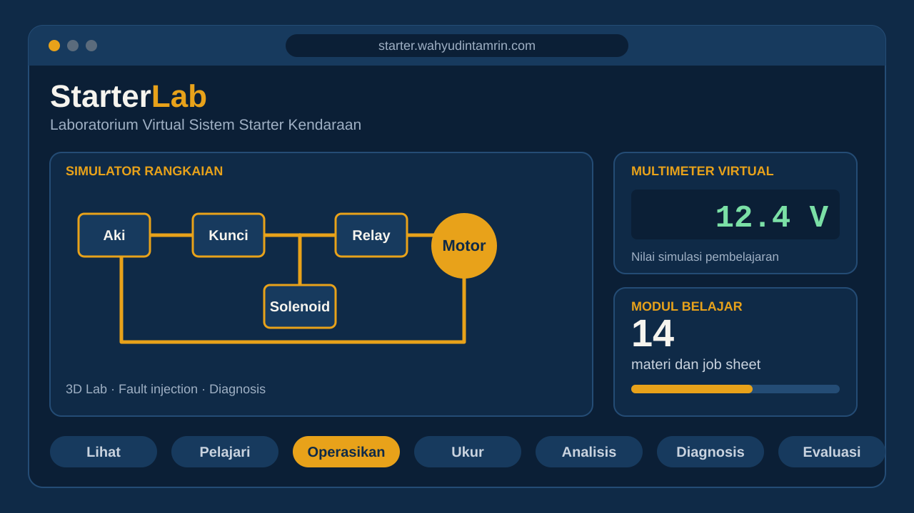

Sasaran / Pengguna
LK 4
Karya Inovasi Pendidikan
Desain karya inovatif yang disusun dari identifikasi kebutuhan pembelajaran hingga rencana evaluasi.
Alur Penyusunan
Dari Refleksi hingga Evaluasi
- 01Refleksi
- 02Masalah / Kebutuhan
- 03Gagasan
- 04Tujuan
- 05Rancangan
- 06Implementasi
- 07Evaluasi
Dokumen Karya Inovasi Pendidikan
Unduh dokumen lengkap penyusunan karya inovasi (LK 4), presentasi StarterLab, serta dokumen versi awal gagasan dalam bentuk PDF.

Web Simulator
Produk Karya Inovasi
StarterLab: Coba Langsung Aplikasinya
StarterLab adalah platform pembelajaran sistem kelistrikan otomotif berbasis web, dengan sistem starter sebagai modul pertama. Dapat dibuka langsung melalui peramban, termasuk dalam mode demo tanpa akun.
Alur belajar
Lihat → Pelajari → Operasikan → Ukur → Analisis → Diagnosis → Evaluasi
Fitur utama
Simulator rangkaian · 3D Lab · Multimeter virtual · Fault injection dan Diagnosis · 14 modul materi dan job sheet · Progres belajar
Catatan: nilai tegangan, arus, hambatan, dan putaran mesin pada aplikasi merupakan nilai simulasi pembelajaran, bukan spesifikasi universal semua kendaraan.
Masalah / Kebutuhan Nyata
Gagasan Kreatif dan Solusi Inovatif
Tujuan Karya Inovasi
Riset Sederhana dan Rancang Bangun
Tahapan Implementasi
Metode dan Hasil Evaluasi
Prinsip Inovasi
Lima Prinsip yang Diperhatikan
Karya inovasi dirancang dengan memperhatikan kebaruan, kreativitas, relevansi/kontekstualitas, kebermanfaatan, dan efektivitas.
Indikator Keberhasilan
Indikator, Target, dan Bukti
Tabel berikut digunakan untuk mengukur keberhasilan karya inovasi secara terukur.